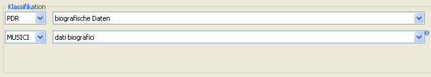
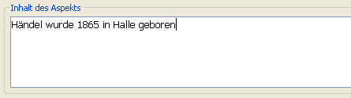
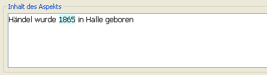
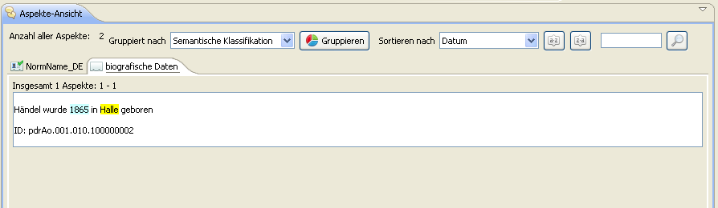

Nun soll zusätzlich ein Aspekt für Geburtsort und -datum erstellt werden. Wir orientieren uns wieder in die Leiste mit den Icons, klicken aber dieses Mal auf das Symbol mit der Blase und dem Sternchen. Alternativ dazu kann auch der "‘Aspekt hinzufügen"’-Button links oben in der Baumansicht gewählt werden.

Wieder wird die enstprechende semantische Klassifikation festgelegt, in diesem Fall "‘biografische Daten"’ bzw. "‘dati biografici"’.

Anschließend wird wieder der Inhalt des Aspekts festgelegt

und das erste Markup für das Geburtsjahr gesetzt. Dazu wird dieses markiert und ein Datums-Element vom Typ "‘Lebensanfang"’ und Subtyp "‘Geburt"’ gewählt und per "‘Zuweisen"’-Button hinterlegt.

Nun sollte das Geburtsjahr mit hellblauer Farbe markiert sein.

Nun wird noch der Geburtsort auf gleiche Weise mit einem entsprechenden Markup versehen:

Und der Inhalt des Aspekts liegt in folgender Gestalt vor:

Bevor der Aspekt abgespeichert werden kann muss noch wie zuvor die Quelle gewählt werden und zusätzlich unter dem Reiter "‘Beziehungen"’ die Zugehörigkeit des Aspektes zu Händel deklariert werden. Dies geschieht über den Button "‘aktuelle Person"’ in dem mit "‘Aspekt von"’ beginnende Beziehungsfeld an dieser Stelle.

Das Textfeld wird automatisch mit Namen und der im Editor verwendeten ID aufgefüllt und der Aspekt kann abgespeichert werden.

Dadurch wird in der Aspekte-Ansicht automatisch ein weiterer Reiter für die biografischen Daten angelegt, in dem der erstellte Aspekt zu finden ist.

Nach dem gleichen Prinzip können nun weitere Aspekte oder Personen angelegt werden.